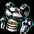
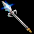
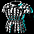

セットアイテム ボスモンスター ランサー
バーベキューパーティーナーガスレイヤー
塔の守護兵
隊長の手本
同志の悲劇
群衆の偶像
君主の統率力
策略の鬼才
| バーベキューパーティー | |||
|---|---|---|---|
| <セット効果 2個> 魔法抵抗 +10％ <セット効果 3個> 魔法抵抗 +15％ ダメージ +30％ <セット効果 4個> 魔法抵抗 +20％ ダメージ +60％ <セット効果 5個> 魔法抵抗 +25％ ダメージ +60％ 回避率 +7％ |
<対象モンスター> キャンサー気孔 Ｂ３ ナーガミンチ（Lv85） |
||
| 串(バーベキューパーティー) | |||
| <基本情報> 装備時、取引不可のアイテムに変更(装備を解除しても取引不可状態になります。) 攻撃力 18~19(1.20秒) 射程距離 150 すべてのスキルレベル +0 ダメージ +60％ |
|||
| <要求能力値> レベル 85 力 60 敏捷 40 |
<着用可能な職業> ランサー |
<ベースアイテム> [攻撃Lv6] 銛 |
|
| <説明> ナーガ達の楽しいバーベキューパーティーに必要な道具類 巨大なイノシシでも串刺すことができる大きな串。何度も肉を焼いた跡が残っている |
|||
| 皮の前掛け(バーベキューパーティー) | |||
| <基本情報> 装備時、取引不可のアイテムに変更(装備を解除しても取引不可状態になります。) 防御力 +8 防御力 +60％ |
|||
| <要求能力値> レベル 85 力 75 |
<着用可能な職業> ランサー アーチャー |
<ベースアイテム> [防御力効率Lv6] クィレス |
|
| <説明> ナーガ達の楽しいバーベキューパーティーに必要な道具類 料理用の皮で出来たエプロン。肉の油が飛び移らないように阻む役目をするようだ |
|||
| 皮の料理帽(バーベキューパーティー) | |||
| <基本情報> 装備時、取引不可のアイテムに変更(装備を解除しても取引不可状態になります。) 防御力 +5 致命打 抵抗 +5％ 防御力 +60％ |
|||
| <要求能力値> レベル 85 力 60 |
<着用可能な職業> ランサー アーチャー |
<ベースアイテム> [防御力効率Lv6] 大型の兜 |
|
| <説明> ナーガ達の楽しいバーベキューパーティーに必要な道具類 清潔な料理の為に皮で作られた帽子。髪の毛の無いナーガ達が使ったということが意外だ |
|||
| 調味料ネックレス(バーベキューパーティー) | |||
| <基本情報> 装備時、取引不可のアイテムに変更(装備を解除しても取引不可状態になります。) ポーション 回復速度 75％ 増加 ダメージ +10％ |
|||
| <要求能力値> レベル 85 |
<着用可能な職業> ランサー アーチャー |
<ベースアイテム> [攻撃Lv2] 首飾り |
|
| <説明> ナーガ達の楽しいバーベキューパーティーに必要な道具類 いつでも取り出して使うことができる料理用の調味料が入っている便利なネックレス |
|||
| レシピ指輪(バーベキューパーティー) | |||
| <基本情報> 装備時、取引不可のアイテムに変更(装備を解除しても取引不可状態になります。) 近接系列職業 攻撃力 +1～+2 ダメージ +3％ 力 +3 知識 +3 |
|||
| <要求能力値> レベル 85 |
<着用可能な職業> ランサー アーチャー |
<ベースアイテム> [攻撃力Lv1][力Lv2][知識Lv2] バトルリング |
|
| <説明> ナーガ達の楽しいバーベキューパーティーに必要な道具類 命より大事な秘伝のソースの作り方が記された指輪。よそ者に勝手に料理秘法を教えるわけにはいかない！ |
|||
| ナーガスレイヤー | |||
|---|---|---|---|
| <セット効果 2個> 魔法抵抗 +10％ <セット効果 3個> 魔法抵抗 +15％ 水ダメージ 15～30 コールド 16Frame <セット効果 4個> 魔法抵抗 +20％ 水ダメージ 30～50 コールド 16Frame 攻撃速度 +15％ <セット効果 5個> 魔法抵抗 +25％ 水ダメージ 30～50 コールド 16Frame 攻撃速度 +30％ 敵に与えたダメージ 7％を 体力吸収 |
<対象モンスター> 河口ダンジョン 'レ' Ｂ２ ナーガの勇者（Lv180） |
||
| ナーガ狩り用の銛(ナーガスレイヤー) | |||
| <基本情報> 装備時、取引不可のアイテムに変更(装備を解除しても取引不可状態になります。) 攻撃力 43~57(1.60秒) 射程距離 130 ダメージ +100％ |
|||
| <要求能力値> レベル 180 力 154 敏捷 66 |
<着用可能な職業> ランサー |
<ベースアイテム> [攻撃Lv8] ビル |
|
| <説明> 魔法傭兵たちがナーガ部族を討伐する際に使用したと言われる恐怖の装備 力強い悪魔であるナーガを簡単に討ち取る銛。どんな悪魔でも、この銛を避けることは難しかったはずだ |
|||
| ナーガ重甲(ナーガスレイヤー) | |||
|  | <基本情報> 装備時、取引不可のアイテムに変更(装備を解除しても取引不可状態になります。) 防御力 +12 防御力 +100％ |
||
| <要求能力値> レベル 180 力 100 |
<着用可能な職業> ランサー アーチャー |
<ベースアイテム> [防御力効率Lv8] ハーフプレートアーマー |
|
| <説明> 魔法傭兵たちがナーガ部族を討伐する際に使用したと言われる恐怖の装備 ナーガたちの鋭い槍から保護するため、特別に考案された特殊な鎧 |
|||
| ナーガ追跡靴(ナーガスレイヤー) | |||
| <基本情報> 装備時、取引不可のアイテムに変更(装備を解除しても取引不可状態になります。) 攻撃力 1~8 防御力 +6 ノックバック 抵抗 +25％ 防御力 +80％ |
|||
| <要求能力値> レベル 180 力 80 |
<着用可能な職業> ランサー アーチャー |
<ベースアイテム> [防御力効率Lv7] メタルシューズ |
|
| <説明> 魔法傭兵たちがナーガ部族を討伐する際に使用したと言われる恐怖の装備 ナーガたちを追跡するためには、自分の足跡を残さないことが肝心だ。自分の足跡を残さないようにするのに、とても役立つ靴 |
|||
| ナーガペンダント(ナーガスレイヤー) | |||
| <基本情報> 装備時、取引不可のアイテムに変更(装備を解除しても取引不可状態になります。) 女性キャラクター スキルレベル +1 ダメージ +10％ 攻撃速度 +20％ |
|||
| <要求能力値> レベル 180 知恵 65 |
<着用可能な職業> ランサー アーチャー |
<ベースアイテム> [攻撃Lv2][攻撃速度Lv1] ペンダント |
|
| <説明> 魔法傭兵たちがナーガ部族を討伐する際に使用したと言われる恐怖の装備 ナーガの紋章が刻まれたネックレス。ナーガ討伐団の証でもある |
|||
| ナーガの宝石リング(ナーガスレイヤー) | |||
| <基本情報> 装備時、取引不可のアイテムに変更(装備を解除しても取引不可状態になります。) 火, 水, 風, 大地 抵抗 +1％ 光 抵抗 +1％ 闇 抵抗 +1％ ダメージ +3％ 力 +3 知識 +3 |
|||
| <要求能力値> レベル 180 知恵 10 |
<着用可能な職業> ランサー アーチャー |
<ベースアイテム> [攻撃力Lv1][力Lv2][知識Lv2] セッティングリング |
|
| <説明> 魔法傭兵たちがナーガ部族を討伐する際に使用したと言われる恐怖の装備 ナーガたちの大事な宝石が埋め込まれている指輪。上級ナーガを討ち取ったという証になる |
|||
| 塔の守護兵 | |||
|---|---|---|---|
| <セット効果 2個> 魔法抵抗 +10％ <セット効果 3個> 魔法抵抗 +15％ 最大HP +150 <セット効果 4個> 魔法抵抗 +20％ 最大HP +200 最大CP +150 <セット効果 5個> 魔法抵抗 +25％ 最大HP +200 最大CP +200 敵に与えたダメージ 6％を 体力吸収 |
<対象モンスター> スウェブタワー ８Ｆ 血の剣闘士（Lv295） |
||
| 塔の守護兵の槍(塔の守護兵) | |||
| <基本情報> 装備時、取引不可のアイテムに変更(装備を解除しても取引不可状態になります。) 攻撃力 20~97(1.80秒) 射程距離 170 すべてのスキルレベル +1 ダメージ +150％ |
|||
| <要求能力値> レベル 295 力 160 敏捷 95 |
<着用可能な職業> ランサー |
<ベースアイテム> [攻撃Lv10] ランス |
|
| <説明> 魔法の塔の守護兵と言えば･･･。 このくらいの槍は、使いこなせなければならない。鉛のような重厚さと羽のような軽さの調和、なんと素晴らしいことか！ |
|||
| 塔の守護兵の鎧(塔の守護兵) | |||
| <基本情報> 装備時、取引不可のアイテムに変更(装備を解除しても取引不可状態になります。) 防御力 +20 防御力 +150％ |
|||
| <要求能力値> レベル 295 力 180 |
<着用可能な職業> ランサー アーチャー |
<ベースアイテム> [防御力効率Lv10] フルプレートアーマー |
|
| <説明> 魔法の塔の守護兵と言えば･･･。 これくらいの鎧は、着ていなくてはならない。堅固な作りでありながら見た目の美しさの調和、本当に誰がこの鎧に傷をつけられるというのか！ |
|||
| 塔の守護兵の指輪(塔の守護兵) | |||
| <基本情報> 装備時、取引不可のアイテムに変更(装備を解除しても取引不可状態になります。) 近接系列職業 攻撃力 +1～+2 ダメージ +3％ 力 +3 知識 +3 |
|||
| <要求能力値> レベル 295 |
<着用可能な職業> ランサー アーチャー |
<ベースアイテム> [攻撃力Lv1][力Lv2][知識Lv2] バトルリング |
|
| <説明> 魔法の塔の守護兵と言えば･･･。 これくらいの指輪は、身に着けていなくてはいけない。もはや指輪の溢れる力を止められる者はいない！ |
|||
| 塔の守護兵の兜(塔の守護兵) | |||
| <基本情報> 装備時、取引不可のアイテムに変更(装備を解除しても取引不可状態になります。) 防御力 +6 致命打 抵抗 +7％ 防御力 +100％ |
|||
| <要求能力値> レベル 295 力 90 |
<着用可能な職業> ランサー アーチャー |
<ベースアイテム> [防御力効率Lv8] ジャイアント兜 |
|
| <説明> 魔法の塔の守護兵と言えば･･･。 このくらいの兜はかぶっていなくてはいけない。立派な兜の防御力を打ち破る者などいないだろう！ |
|||
| 塔の守護兵の靴(塔の守護兵) | |||
| <基本情報> 装備時、取引不可のアイテムに変更(装備を解除しても取引不可状態になります。) 攻撃力 1~8 防御力 +6 ノックバック 抵抗 +25％ 最大HP +40％ 移動速度 +30％ |
|||
| <要求能力値> レベル 295 力 80 |
<着用可能な職業> ランサー アーチャー |
<ベースアイテム> [最大HP効率Lv4][移動速度Lv5] メタルシューズ |
|
| <説明> 魔法の塔の守護兵と言えば･･･。 このくらいの靴は履いていなくてはいけない。生命のオーラが溢れ出る魔法の力を感じないか？ |
|||
| 隊長の手本 | |||
|---|---|---|---|
| <セット効果 2個> 魔法抵抗 +10％ <セット効果 3個> 魔法抵抗 +15％ 攻撃速度 +15％ <セット効果 4個> 魔法抵抗 +20％ 攻撃速度 +30％ スキルレベル +3 <セット効果 5個> 魔法抵抗 +25％ 攻撃速度 +30％ スキルレベル +4 ダメージ +140％ |
<対象モンスター> トラン森南部 森の野獣（Lv385） スウェブタワー Ｂ６ 塔の野獣（Lv410） |
||
| 指揮官の槍(隊長の手本) | |||
| <基本情報> 装備時、取引不可のアイテムに変更(装備を解除しても取引不可状態になります。) 攻撃力 44~83(1.40秒) 射程距離 150 すべてのスキルレベル +2 ダメージ +150％ |
|||
| <要求能力値> レベル 385 力 316 敏捷 157 |
<着用可能な職業> ランサー |
<ベースアイテム> [攻撃Lv10] スパチュームDX |
|
| <説明> 組職の幹部が、持っていなければならない模範的な姿勢とは何なのか？ 攻撃に優れた指揮官は、瞬時の決断において躊躇することがあってはいけない |
|||
| 指揮官の兜(隊長の手本) | |||
| <基本情報> 装備時、取引不可のアイテムに変更(装備を解除しても取引不可状態になります。) 防御力 +18 致命打 抵抗 +17％ 防御力 +100％ |
|||
| <要求能力値> レベル 385 力 220 |
<着用可能な職業> ランサー アーチャー |
<ベースアイテム> [防御力効率Lv8] 大型の兜GDX |
|
| <説明> 組職の幹部が、持っていなければならない模範的な姿勢とは何なのか？ 戦略に優れた指揮官は、重要な決断において常に確信がなければいけない |
|||
| 指揮官の鎧(隊長の手本) | |||
| <基本情報> 装備時、取引不可のアイテムに変更(装備を解除しても取引不可状態になります。) 防御力 +28 防御力 +120％ |
|||
| <要求能力値> レベル 385 力 260 |
<着用可能な職業> ランサー アーチャー |
<ベースアイテム> [防御力効率Lv9] クィレスGDX |
|
| <説明> 組職の幹部が、持っていなければならない模範的な姿勢とは何なのか？ 防御に優れた指揮官は、どんな攻撃も防ぐという信頼がなければならない |
|||
| 指揮官の鉄の靴(隊長の手本) | |||
| <基本情報> 装備時、取引不可のアイテムに変更(装備を解除しても取引不可状態になります。) 攻撃力 2~17 防御力 +14 ノックバック 抵抗 +65％ 最大HP +40％ 移動速度 +30％ |
|||
| <要求能力値> レベル 385 力 293 |
<着用可能な職業> ランサー アーチャー |
<ベースアイテム> [最大HP効率Lv4][移動速度Lv5] メタルシューズGDX |
|
| <説明> 組職の幹部が、持っていなければならない模範的な姿勢とは何なのか？ 傭兵術に優れた指揮官は、前進と後退において信念をもっっていなければならない |
|||
| 指揮官の証(隊長の手本) | |||
| <基本情報> 装備時、取引不可のアイテムに変更(装備を解除しても取引不可状態になります。) 近接系列職業 攻撃力 +2～+3 ダメージ +4％ 力 +4 知識 +4 |
|||
| <要求能力値> レベル 385 知恵 424 |
<着用可能な職業> ランサー アーチャー |
<ベースアイテム> [攻撃力Lv1][力Lv3][知識Lv3] バトルリングDX |
|
| <説明> 組職の幹部が、持っていなければならない模範的な姿勢とは何なのか？ 高い地位にいる指揮官であればあるほど、自分の職務に対して責任を持たなければならない |
|||
| 同志の悲劇 | |||
|---|---|---|---|
| <セット効果 2個> 魔法抵抗 +10％ <セット効果 3個> 魔法抵抗 +15％ 風ダメージ 110～115 スタン 16Frame ダメージ +80％ <セット効果 4個> 魔法抵抗 +20％ 風ダメージ 115～120 スタン 16Frame ダメージ +160％ 命中率 +10％ <セット効果 5個> 魔法抵抗 +25％ 風ダメージ 115～120 スタン 16Frame ダメージ +160％ 命中率 +16％ 敵に与えたダメージ 4％を 体力吸収 |
<対象モンスター> 暴かれた納骨堂 Ｂ６ 納骨堂の主（Lv425） |
||
| 仲間の槍(同志の悲劇) | |||
|  | <基本情報> 装備時、取引不可のアイテムに変更(装備を解除しても取引不可状態になります。) 攻撃力 50~117(1.70秒) 射程距離 170 すべてのスキルレベル +2 ダメージ +150％ |
||
| <要求能力値> レベル 425 力 360 敏捷 172 |
<着用可能な職業> ランサー |
<ベースアイテム> [攻撃Lv10] 超長槍GDX |
|
| <説明> 同志であった魔法傭兵の遺体は、呪い受けアンデッドになってしまった。辛くとも仲間のため、無惨な姿から本来あるべき姿へと戻してあげなくてならないでしょう 同志であった魔法傭兵が使った槍だ。折れた槍は、修復されたその日から、再び悪を根絶する戦いで威力を発揮してくれるだろう |
|||
| 仲間の鎧(同志の悲劇) | |||
|  | <基本情報> 装備時、取引不可のアイテムに変更(装備を解除しても取引不可状態になります。) 防御力 +32 防御力 +120％ |
||
| <要求能力値> レベル 425 力 180 知恵 130 |
<着用可能な職業> ランサー アーチャー |
<ベースアイテム> [防御力効率Lv9] ライトアーマーLX |
|
| <説明> 同志であった魔法傭兵の遺体は、呪い受けアンデッドになってしまった。辛くとも仲間のため、無惨な姿から本来あるべき姿へと戻してあげなくてならないでしょう 同志の鎧は、何事も無かったかのように昔と変わらないが、逆にその事が亡き同志へ熱い思いを湧き上がらせるでしょう |
|||
| 仲間の兜(同志の悲劇) | |||
| <基本情報> 装備時、取引不可のアイテムに変更(装備を解除しても取引不可状態になります。) 防御力 +19 致命打 抵抗 +20％ 防御力 +120％ |
|||
| <要求能力値> レベル 425 力 280 |
<着用可能な職業> ランサー アーチャー |
<ベースアイテム> [防御力効率Lv9] ジャイアント兜XLS |
|
| <説明> 同志であった魔法傭兵の遺体は、呪い受けアンデッドになってしまった。辛くとも仲間のため、無惨な姿から本来あるべき姿へと戻してあげなくてならないでしょう 同志の息使いが残る兜 |
|||
| 仲間のガントレット(同志の悲劇) | |||
| <基本情報> 装備時、取引不可のアイテムに変更(装備を解除しても取引不可状態になります。) 攻撃力 3~4 防御力 +10 攻撃速度 +35％ ダメージ +20％ |
|||
| <要求能力値> レベル 425 力 230 |
<着用可能な職業> ランサー アーチャー |
<ベースアイテム> [攻撃速度Lv2][攻撃Lv4] ガントレットXLS |
|
| <説明> 同志であった魔法傭兵の遺体は、呪い受けアンデッドになってしまった。辛くとも仲間のため、無惨な姿から本来あるべき姿へと戻してあげなくてならないでしょう 同志の温もりを感じる手袋 |
|||
| 仲間の指輪(同志の悲劇) | |||
| <基本情報> 装備時、取引不可のアイテムに変更(装備を解除しても取引不可状態になります。) 近接系列職業 攻撃力 +2～+3 ダメージ +4％ 力 +4 知識 +4 |
|||
| <要求能力値> レベル 425 知恵 424 |
<着用可能な職業> ランサー アーチャー |
<ベースアイテム> [攻撃力Lv1][力Lv3][知識Lv3] バトルリングDX |
|
| <説明> 同志であった魔法傭兵の遺体は、呪い受けアンデッドになってしまった。辛くとも仲間のため、無惨な姿から本来あるべき姿へと戻してあげなくてならないでしょう 同志のすべての過去が詰まっている思い出の指輪 |
|||
| 群衆の偶像 | |||
|---|---|---|---|
| <セット効果 2個> 魔法抵抗 +10％ <セット効果 3個> 魔法抵抗 +15％ 水ダメージ 100～110 コールド 8Frame スキルレベル +4 <セット効果 4個> 魔法抵抗 +20％ 水ダメージ 120～130 コールド 8Frame スキルレベル +5 ダメージ +90％ <セット効果 5個> 魔法抵抗 +25％ 水ダメージ 120～130 コールド 8Frame スキルレベル +6 ダメージ +180％ 敵に与えたダメージ 3％を 体力吸収 |
<対象モンスター> 呪いを受けたミズナの洞窟 Ｂ２ 戦慄のサソリ（Lv535） |
||
| イコンスピア(群衆の偶像) | |||
| <基本情報> 装備時、取引不可のアイテムに変更(装備を解除しても取引不可状態になります。) 攻撃力 56~142(1.80秒) 射程距離 170 すべてのスキルレベル +2 ダメージ +150％ |
|||
| <要求能力値> レベル 535 力 420 敏捷 202 |
<着用可能な職業> ランサー |
<ベースアイテム> [攻撃Lv10] ランスXLS |
|
| <説明> 群衆の偶像に使用された装備。装備も主人と共に全ての人々の偶像になった たくさんの指揮官たちが欲しがっている強力で素敵な槍 |
|||
| イコンアーマー(群衆の偶像) | |||
| <基本情報> 装備時、取引不可のアイテムに変更(装備を解除しても取引不可状態になります。) 防御力 +37 防御力 +120％ 最大HP +40％ |
|||
| <要求能力値> レベル 535 力 464 |
<着用可能な職業> ランサー アーチャー |
<ベースアイテム> [防御力効率Lv9][最大HP効率Lv4] コンポジットアーマーGDX |
|
| <説明> 群衆の偶像に使用された装備。装備も主人と共に全ての人々の偶像になった たくさんの指揮官たちが着てみたいと思う固くて素敵な鎧 |
|||
| イコンヘルム(群衆の偶像) | |||
| <基本情報> 装備時、取引不可のアイテムに変更(装備を解除しても取引不可状態になります。) 防御力 +19 致命打 抵抗 +20％ 防御力 +120％ 最大HP +40％ |
|||
| <要求能力値> レベル 535 力 280 |
<着用可能な職業> ランサー アーチャー |
<ベースアイテム> [防御力効率Lv9][最大HP効率Lv4] ジャイアント兜XLS |
|
| <説明> 群衆の偶像に使用された装備。装備も主人と共に全ての人々の偶像になった たくさんの指揮官たちの偶像となった兜 |
|||
| イコンガントレット(群衆の偶像) | |||
| <基本情報> 装備時、取引不可のアイテムに変更(装備を解除しても取引不可状態になります。) 攻撃力 3~4 防御力 +10 攻撃速度 +35％ ダメージ +25％ |
|||
| <要求能力値> レベル 535 力 230 |
<着用可能な職業> ランサー アーチャー |
<ベースアイテム> [攻撃速度Lv2][攻撃Lv4] ガントレットXLS |
|
| <説明> 群衆の偶像に使用された装備。装備も主人と共に全ての人々の偶像になった たくさんの指揮官たちのロマンである手袋 |
|||
| イコンリング(群衆の偶像) | |||
| <基本情報> 装備時、取引不可のアイテムに変更(装備を解除しても取引不可状態になります。) 近接系列職業 攻撃力 +2～+3 ダメージ +4％ 力 +4 知識 +4 |
|||
| <要求能力値> レベル 535 知恵 424 |
<着用可能な職業> ランサー アーチャー |
<ベースアイテム> [攻撃力Lv1][力Lv3][知識Lv3] バトルリングDX |
|
| <説明> 群衆の偶像に使用された装備。装備も主人と共に全ての人々の偶像になった たくさんの指揮官たちが欲しがる最高級リング |
|||
| 君主の統率力 | |||
|---|---|---|---|
| <セット効果 2個> 魔法抵抗 +10％ <セット効果 3個> 魔法抵抗 +15％ スキルレベル +5 ダメージ +100％ <セット効果 4個> 魔法抵抗 +20％ スキルレベル +6 ダメージ +200％ 敵に与えたダメージ 1％を 体力吸収 <セット効果 5個> 魔法抵抗 +25％ スキルレベル +7 ダメージ +200％ 敵に与えたダメージ 2％を 体力吸収 致命打発動確率 +10％ |
<対象モンスター> ゴールド・スワンプ洞窟 B3 海の君主（Lv580） |
||
| 君主の槍(君主の統率力) | |||
| <基本情報> 装備時、取引不可のアイテムに変更(装備を解除しても取引不可状態になります。) 攻撃力 56~142(1.80秒) 射程距離 170 すべてのスキルレベル +2 ダメージ +150％ ダメージ +120％ |
|||
| <要求能力値> レベル 580 力 420 敏捷 202 |
<着用可能な職業> ランサー |
<ベースアイテム> [攻撃Lv10][攻撃Lv9] ランスXLS |
|
| <説明> 一国の君主が持つ統率力の助けとなる装備 君主が騎士となる時、無慈悲なまでの破壊力を発揮する槍 |
|||
| 君主の鎧(君主の統率力) | |||
| <基本情報> 装備時、取引不可のアイテムに変更(装備を解除しても取引不可状態になります。) 防御力 +37 防御力 +150％ 最大HP +40％ |
|||
| <要求能力値> レベル 580 力 464 |
<着用可能な職業> ランサー アーチャー |
<ベースアイテム> [防御力効率Lv10][最大HP効率Lv4] コンポジットアーマーGDX |
|
| <説明> 一国の君主が持つ統率力の助けとなる装備 君主が外交を行う際、その誇り高きプライドを物語る鎧 |
|||
| 君主の王冠(君主の統率力) | |||
| <基本情報> 装備時、取引不可のアイテムに変更(装備を解除しても取引不可状態になります。) 防御力 +18 すべての状態異常 抵抗 +18％ 防御力 +150％ 最大HP +40％ |
|||
| <要求能力値> レベル 580 カリスマ 275 |
<着用可能な職業> ランサー アーチャー |
<ベースアイテム> [防御力効率Lv10][最大HP効率Lv4] 王冠XLS |
|
| <説明> 一国の君主が持つ統率力の助けとなる装備 絶対君主の権力を象徴する王冠 |
|||
| 君主の指輪(君主の統率力) | |||
| <基本情報> 装備時、取引不可のアイテムに変更(装備を解除しても取引不可状態になります。) 近接系列職業 攻撃力 +2～+3 ダメージ +5％ 力 +5 知識 +5 |
|||
| <要求能力値> レベル 580 知恵 424 |
<着用可能な職業> ランサー アーチャー |
<ベースアイテム> [攻撃力Lv1][力Lv3][知識Lv3] バトルリングDX |
|
| <説明> 一国の君主が持つ統率力の助けとなる装備 王族である君主の家紋が刻まれた指輪 |
|||
| 君主の心臓(君主の統率力) | |||
| <基本情報> 装備時、取引不可のアイテムに変更(装備を解除しても取引不可状態になります。) 女性キャラクター スキルレベル +2 攻撃速度 +35％ ダメージ +35％ |
|||
| <要求能力値> レベル 580 知恵 365 |
<着用可能な職業> ランサー アーチャー |
<ベースアイテム> [攻撃速度Lv2][攻撃Lv5] ペンダントXLS |
|
| <説明> 一国の君主が持つ統率力の助けとなる装備 すべてを統率する君主の包容力が感じられるネックレス |
|||
| 策略の鬼才 | |||
|---|---|---|---|
| <セット効果 2個> 魔法抵抗 +10％ <セット効果 3個> 魔法抵抗 +15％ 最大HP +400 ダメージ +110％ <セット効果 4個> 魔法抵抗 +20％ 最大HP +450 ダメージ +220％ 敵に与えたダメージ 1％を 体力吸収 <セット効果 5個> 魔法抵抗 +25％ 最大HP +450 ダメージ +220％ 敵に与えたダメージ 1％を 体力吸収 致命打発動確率 +10％ |
<対象モンスター> 時の森（3層目） ハゲワシ勇者（Lv710） |
||
| 策士の槍(策略の鬼才) | |||
| <基本情報> 装備時、取引不可のアイテムに変更(装備を解除しても取引不可状態になります。) 攻撃力 56~142(1.80秒) 射程距離 170 すべてのスキルレベル +2 ダメージ +150％ ダメージ +150％ |
|||
| <要求能力値> レベル 710 力 420 敏捷 202 |
<着用可能な職業> ランサー |
<ベースアイテム> [攻撃Lv10][攻撃Lv10] ランスXLS |
|
| <説明> 今では忘れ去られてしまった悪魔と傭兵団の大戦争の際に、史上最高といわれた策士の伝説の装備 策略の書が巻かれている変な槍。自分が戦闘に参加している最中であっても、次の手を考えられるようになっているのだろう |
|||
| 策士の鎧(策略の鬼才) | |||
| <基本情報> 装備時、取引不可のアイテムに変更(装備を解除しても取引不可状態になります。) 防御力 +37 防御力 +150％ 最大HP +70％ |
|||
| <要求能力値> レベル 710 力 464 |
<着用可能な職業> ランサー |
<ベースアイテム> [防御力効率Lv10][最大HP効率Lv5] コンポジットアーマーGDX |
|
| <説明> 今では忘れ去られてしまった悪魔と傭兵団の大戦争の際に、史上最高といわれた策士の伝説の装備 相手の隙を作りやすい戦術を駆使して、策士と職人が一緒に考案した鎧 |
|||
| 策士の冠(策略の鬼才) | |||
| <基本情報> 装備時、取引不可のアイテムに変更(装備を解除しても取引不可状態になります。) 防御力 +19 致命打 抵抗 +20％ 防御力 +150％ 最大HP +70％ |
|||
| <要求能力値> レベル 710 力 280 |
<着用可能な職業> ランサー |
<ベースアイテム> [防御力効率Lv10][最大HP効率Lv5] ジャイアント兜XLS |
|
| <説明> 今では忘れ去られてしまった悪魔と傭兵団の大戦争の際に、史上最高といわれた策士の伝説の装備 血行を良くして、頭の回転をよくするのに役立つツボを刺激してくれる冠。知的に見えるデザインで、実用性と芸術性を兼ね備えたつくり |
|||
| 策士の指輪(策略の鬼才) | |||
| <基本情報> 装備時、取引不可のアイテムに変更(装備を解除しても取引不可状態になります。) 近接系列職業 攻撃力 +2～+3 ダメージ +5％ 力 +5 知識 +5 |
|||
| <要求能力値> レベル 710 知恵 424 |
<着用可能な職業> ランサー |
<ベースアイテム> [攻撃力Lv1][力Lv3][知識Lv3] バトルリングDX |
|
| <説明> 今では忘れ去られてしまった悪魔と傭兵団の大戦争の際に、史上最高といわれた策士の伝説の装備 非常に高価に見える指輪。これは、最後の切り札のための伏線に過ぎないのかもしれない |
|||
| 策士のネックレス(策略の鬼才) | |||
| <基本情報> 装備時、取引不可のアイテムに変更(装備を解除しても取引不可状態になります。) 女性キャラクター スキルレベル +2 攻撃速度 +35％ ダメージ +40％ |
|||
| <要求能力値> レベル 710 知恵 365 |
<着用可能な職業> ランサー |
<ベースアイテム> [攻撃速度Lv2][攻撃Lv5] ペンダントXLS |
|
| <説明> 今では忘れ去られてしまった悪魔と傭兵団の大戦争の際に、史上最高といわれた策士の伝説の装備 部下たちに対して、もう少し主導権をアピールできるように作られた威圧的な演出が施された装備 |
|||